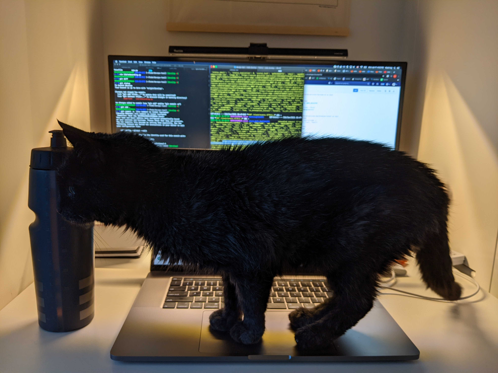

Over the 2020 holiday break, CL and I decided to move in her family cat, Traffic, who is 18 years old. An 18 year old cat in human years equates to 88. We thought moving her would be a good idea as she would no longer have to go up and down stairs and could live in a smaller space in peace without her cat brother Maneki bothering her. We decided that moving her during the holidays would give us the free time to help her adjust to her new environment and schedule and provide her the extra attention she needed.
Initial concerns
Initially when first moving her in, there were some pretty big concerns that I had as I've never owned a cat before, namely:
- Would a cat of her age beable to adapt to a new environment?
- How badly would my allergies act up
- Would the condo have affects her quality of life
- Would moving her at an old age shorten her life span?
- Would she okay being in a single cat house hold? (Shes never lived alone)
Her current home and family seemed to have very little concerns, so on 2020-12-19 we decided to move her by putting her in the carrier, getting all her favourite blankets, combs, brushes, feeding bowls, and moving her straight to the condo. Some additional items we bought were a catit water fountain and a portable honeywell heater from Canadian tire.
Day One
>After bring the carrier up the elevator and into our space, we decided to put her in the middle of the living room and open the carrier. I put the personal heater right by her to make sure she knew she could always come back to the carrier as a safe space that would be warm and familiar. She came out pretty quickly and started exploring the entire place. She would continously make laps all throught the day from her food, to the cat litter box, to the catit water fountain. We were pleasant surprised and confident with how well she dealt with the move, until we decided to go to sleep
When we decided to go to sleep that night, we figured that she had settled in enough and would go to sleep in her carrier. I told CL that I would prefer for her not to sleep in our bed, as I wouldn't want my cat allergies flairing up and making me resent her in the long run. We closed the bedroom door and maybe 20 minutes into sleeping she started meowing at full volume. She went on meowing and meowing for the next half an hour before we decided to give in and let her sleep on the bed. We thought all was good until she started becoming very vocal. Pretty much every hour for the entire night she would meow and keep us awake. It was pretty clear the anxiety kicked in for her and she was freaking out
Get a cat they said, it would be fun they said.

The first night, to say the least was pretty rough. It actually made me really unsure if moving a cat who is 18 year old was a good idea. Luckily enough it was the holidays, so we had some time to experiment

One Week Later
I feel for most things, transitions are usually the hardest part. Long story short, it took her a week to settled in and after that it has been pretty smooth sailing. I am now a really proud cat owner and wake up 8am everyday to feed her. She's pretty low maintainance for the most part and quite enjoyable. She seems to sleep the majority of the day (probably atleast 16 hours) and sleeps through the entire night. It defintely took her some adjusting to realize that her food, water and litter will always be there, but bravo to a 88 year old for being able to adjust to a new environment in a week. She at first was waking us up at 7am-ish because thats when she was previously fed, but I think the saying "don't bite the hand that feeds" explains a lot here.
We quickly realized that she had some quirks, like she was a gravy licker. Gravy licker meaning whenever we would put out food, she would just lick off the gravy bit from it and leave the rest of the wet food to dry. This actually got me pretty frustrated because she would essentially waste food. We found a brand of food that specialized in this specific niche of cats who are gravy lickers and immediately bought a variety of different kinds of "cat gravy". The only brand that she really enjoyed was WeRuVa. This gravy best feline friend oh my gravy answered her needs. Now we feed her canned wet food twice and day and if she's hungry throughout those meals, we just mix the gravy in with whatever is left in her plate.
To Infinity and Beyond
I am now a proud cat owner and see the appeal. I can totally see how people end up owning more than one or two cats. I see how the internet is literally just full of cats and porn (typically not in the same space, haha). Google clearly knows I'm cat owner at this point and I've probably researched dumped atleast a dozen hours into cats. Some majors take aways I've had from owning a cat for the last month are:
- Having a cat will force you to vacuum once a day, which is good
- Whenever someone comes over, Traffic will immediately run into a safe space which is a closet, the bathtub or hide beside our bed
- Everyone has cat allergies, but you gain a tolerance to your own cat. I tale Allegra 12 hour if I feel that it's killing me, but thats rare
- Sleeping with a cat can be super annoying, because you dont want to kick them and have them attack your feet
- The relationship between cats and humans likely started as early as 4400 B.C. , they likely stayed around farms and helped prevent rodents
I think at this point in my life, it adds a small additional amount of responsibility but with a huge benefit. Traffic will remind me that there is more to life than just work and computers, and that I should take a break sometime just to enjoy the sunshine and take a nap.
